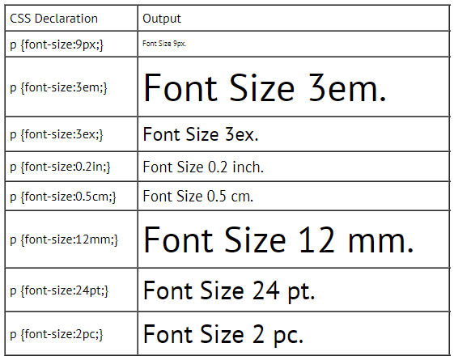
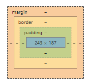
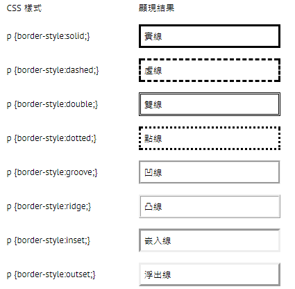

tag内部直接声明style
<p style='font-family:verdana; font-size:15px;'>This is font size 15.</p>
style嵌入header
<head> <style type="text/css"> div { background-color:#FF0000; } </style> </head>
常用的一种方式，在
header里面声明css link
<link rel=stylesheet type="text/css" href="css/main.css">
现在已经不怎么用了
若一个
html包含多个css, 从高到底的优先级是：
- 內行套用的样式表 (Inline stylesheet)
- 嵌入套用的样式表 (Embedded stylesheet)
- 导入套用的样式表 (Imported stylesheet)
- 外部连接套用的样式表 (Linked stylesheet)
- 浏览器本身的样式表 (Browser's own stylesheet)
这两者最大的不同，是在于 ID 选择器在一个 HTML 文件中只能被使用一次，而 Class 选择器在一个 HTML 文件中可以被使用多次。第二个不同的地方，是 ID 选择器可以被 Javascript 中的 GetElementByID 函数所使用，而 Class 选择器无法被 Javascript 使用到。
并沒有什么固定的规则，来決定什么时候要用 ID 及什么时候要用 Class。建议是尽量用 Class，因为最灵活 (同一个 HTML 文件可以利用这类的选择器多次)。唯一的例外，是当你要用 Javascript 的 GetElementByID 函数时。在這个情况下，你就应该要用 ID。
Div是区块级的容器(block-level container)，在
</div>后会换行。Span可以涵盖更细小的元素，常用于调整单一文字样式。在
</span>后不会换行。
Length units in CSS fall under two categories: 相对单位(relative units) and 绝对单位(absolute units).
- px: pixels
- em: em
- ex: 字母高度(height of letter x)
- in: inches
- cm: centimeters
- mm: millimeters
- pt: points, 1 pt = 1/72 in
- pc: picas, 1 pc = 12 pt
如果没有注明单位，则默认单位是px(If no unit is specified, the default unit is px).

Box Model relevant command:

margin: [margin-top] [margin-right] [margin-bottom] [margin-left]共有三种方式设定，分别是长度(length),百分比(oercent),自适应(auto)
border-styleborder-widthborder-colorborder-top-, border-left-, border-bottom-, border-right-边框形状

边框宽度,
border-width: [thin] | [medium] | [thick] | [5px]
边框颜色,
border-color: [red] | [#0000FF]
[border-top-] | [border-left-] | [border-bottom-] | [border-right-] style子属性, 将边框分拆为四条边逐个设置。
属性值设置和margin相同, 只是用于不同的作用域。
padding: [padding-top] [padding-right] [padding-bottom] [padding-left]
Examples:
#container1 { padding: 15px 2em 30px 5%; }
#container2 { padding: 30px 10em 20px; }
#container3 { padding: 10px 5px; }
#container4 { padding: 30em; }
另外这几个属性常遗忘，参照这里，快速翻阅 -->background property
font-family: 可以设置多个, 根据浏览器支持的字体属性来确定显示哪个属性。
p { font-family: Arial, Verdana, "New Times Roman" }
font-size: 可参照length units, 也可以简单设置
p { font-size: [xx-large] | [x-large] | [large] | [medium] | [small] | [x-small] | [xx-small] }
font-weight: 设置字体厚度, value: 100~900, 也可以简单设置
p { font-weight: bold | bolder | normal }
font-style: 设置字体是否为斜体字
p { font-style: italic | oblique }
font-variant: 设置文字是否以小型大写字体(small caps), 字母都是大写，字体比normal小一些
p { font-variant: small-caps | normal }
point梳理参照这里，快速翻阅 -->a-link property
list-style-type: 最常见设定值:
- none (无)
- disc (全黑圆圈)
- circle (空心圆圈)
- square (正方形)
list-style-position: 属性设定值为 inside | outside 使用outside属于标准缩进
list-style-image: format: list-style-image:url([image_url]);
每一个方向(direction: top, right, bottom, left)的位置值可以是长度(length), 百分比(percent)或自适应(auto)
p { position:relative; top:10%; right:50px; bottom: 10%; left:50px; }
overflow 用来设定当内容放不下的时候, 采用何种方式显示内容。
z-index 用来决定元素重叠的顺序, 值比较打的那个元素会被放在上面。
direction 用来设定文字的方向
p { direction: ltr | rtl }ltr: 从左侧开始input, rtl则相反
letter-spacing 用来设定每一个字母之间的空间
p { letter-spacing: 5px; }
word-spacing 用来设定每个字与每个字之间的距离
p { word-spacing: 5px; }
PS.The difference is word and letter
line-height 用来设定每一行之间的空间
p { line-height: 8px; }
文字对齐方式
文字装饰(style)
每一段文字的第一行前面留多少空间(缩进-indent)
p { text-indent: 15px; }
控制大小写如何展现
span { float: left | right | none }float 会影响整个页面的布局
span { clear: left | right | both | none }与float相反, 专门抵消float的作用
Reference: css-tutorial